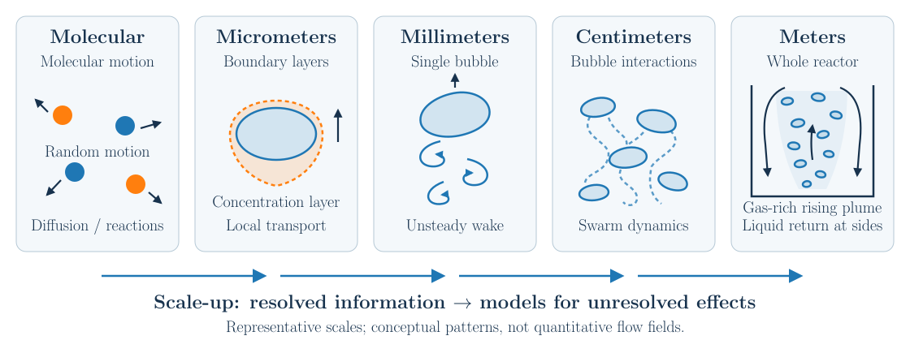
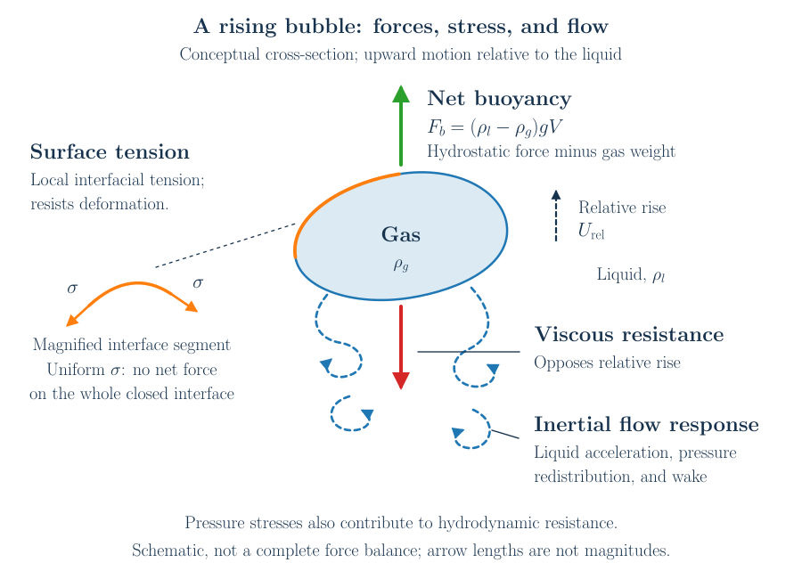
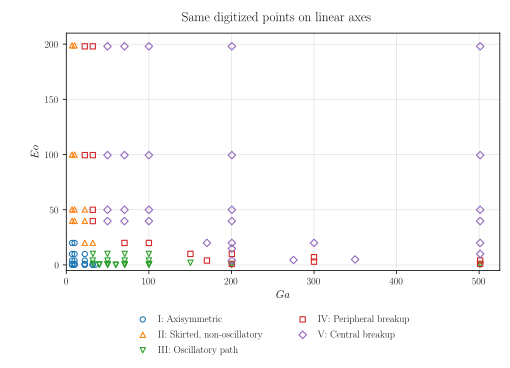
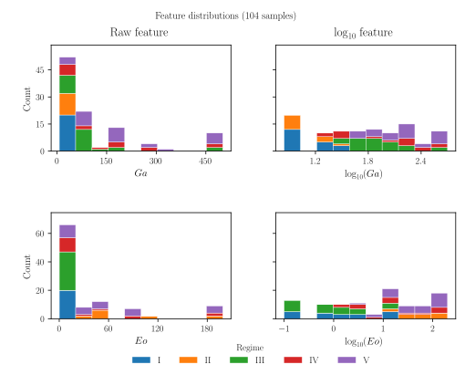
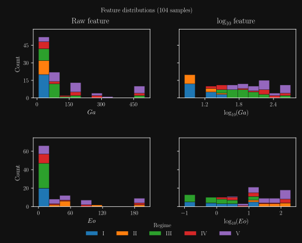
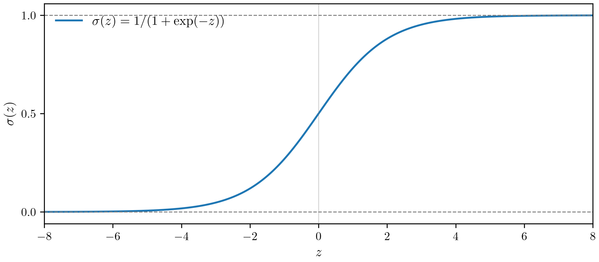
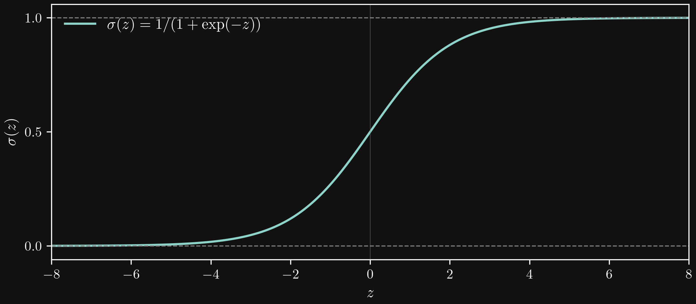
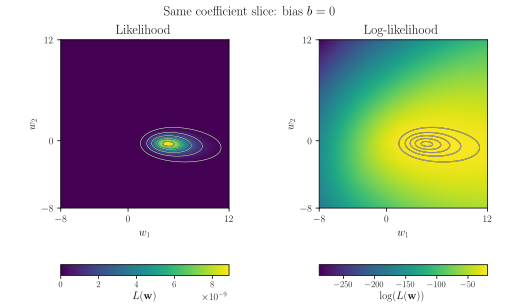
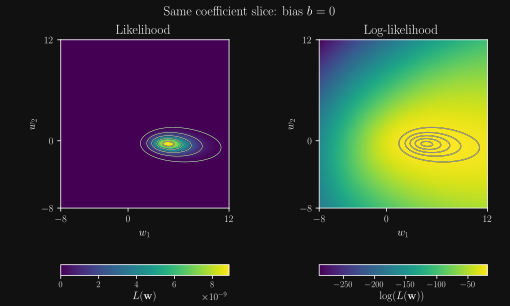

Surrogate models for discrete predictions
Predicting the stability regime of rising bubbles
This work is licensed under a Creative Commons Attribution 4.0 International License.
Learning objectives
After this lecture, you should be able to:
- explain why gas–liquid mass transfer requires models connecting different scales;
- identify the physical effects controlling the motion and deformation of a single bubble;
- define and interpret the Eötvös and Galilei numbers, including the chosen length convention;
- explain why a numerical regime map motivates a surrogate with discrete outputs;
- construct logarithmic, min–max-scaled features and formulate a labeled binary dataset;
- define a linear classification score, a Heaviside prediction, and its decision boundary;
- explain the perceptron update as an intuitive error-correction rule;
- interpret perceptron convergence and non-monotone training-error histories;
- formulate Bernoulli class probabilities, maximum likelihood, binary cross entropy, and the logistic-regression gradient;
- combine sigmoid features into a nonlinear classifier and relate its staged training to a multilayer perceptron;
- encode categorical labels, interpret softmax probabilities and argmax regions, and use validation-based early stopping.
From gas–liquid mass transfer to bubble dynamics
Gas–liquid mass transfer is essential in chemical and process engineering. Bubble column reactors bring a gas into contact with a liquid; bioreactors must supply dissolved gases such as oxygen to microorganisms or cells. In gas-evolving electrolyzers, bubble formation and removal affect the exposed electrode area and transport near the electrode. These applications connect reactions and local transport to the behavior of an entire apparatus.

This animation shows an oxygen Taylor bubble in a copper-complex solution. The colored wake provides a visual example of the connection between bubble motion, transport, and chemical reaction. The confined Taylor-bubble geometry differs from the unconfined single-bubble setup used for the regime map later in this lecture.
A reactor therefore contains several interacting ranges of scales:
| Representative scale | Processes of interest | Consequence for modeling |
|---|---|---|
| Molecular, below the continuum scale | Molecular interactions and reaction events | Reaction kinetics and constitutive relations |
| Micrometers | Concentration boundary layers near gas–liquid interfaces | Strong gradients control local mass transfer |
| Millimeters | Individual bubble shapes, wakes, and trajectories | Bubble dynamics influence interfacial area and transport |
| Centimeters | Bubble–bubble and wake interactions, coalescence and breakup | Collective behavior changes bubble populations |
| Meters | Reactor circulation, bubble plumes, and, in suitable geometries, slugs | Large-scale flow redistributes gas and dissolved species |
These are illustrative scales, not universal boundaries. Bubble sizes and boundary-layer thicknesses depend on the fluid system and operating conditions. Reaction kinetics enter continuum models as rate laws, although the underlying molecular events occur below the continuum scale.


Scale-up modeling
A detailed numerical or experimental investigation resolves a limited range of scales. Its results supply a model for effects that a larger-scale description cannot resolve. At the next level, that model is combined with newly resolved processes. This is repeated until a description of the apparatus becomes feasible. A surrogate can provide one such connection: it approximates a relationship learned from detailed simulations or measurements.
For example, an interface-resolved simulation of an individual bubble can inform a model for its motion or mass transfer. An Euler–Lagrange calculation then tracks many bubbles without resolving every interface or concentration boundary layer. An Euler–Euler model describes interpenetrating phases through averaged fields and requires closures for interphase exchange and, often, bubble populations. The larger-scale prediction inherits the assumptions and uncertainty of these closures. Where the reactor state changes the local bubble environment, information must also pass back toward the smaller-scale model.
Numerical investigations
Interface-resolved, Euler–Lagrange, and Euler–Euler descriptions retain different information. The sketches distinguish a resolved gas–liquid interface, tracked bubble particles, and an averaged gas-volume-fraction field.


These numerical descriptions cover overlapping ranges of scales. Their useful range depends on spatial and temporal resolution, model assumptions, and computational cost. Covering two or three orders of magnitude can already be demanding; this is a practical illustration rather than a fixed limit for every method.
Our focus is the dynamics of an individual rising bubble. Before learning a classifier, we need to understand which physical parameters distinguish its possible behaviors.
What controls a rising bubble?
We consider an initially spherical gas bubble released from rest in an otherwise quiescent liquid. The density difference drives its rise. As the surrounding liquid moves, pressure and viscous stresses act on the interface, while surface tension resists deformation.


- Buoyancy: the net hydrostatic driving force is \(F_b=(\rho_l-\rho_g)gV\), where \(V\) is the gas volume.
- Viscous effects: velocity gradients generate stresses that dissipate energy and contribute to resistance against the motion.
- Inertia: acceleration of the bubble and liquid, wake formation, and unsteady pressure contribute to the dynamics. Inertia is a response to forces, not an additional independent applied force.
- Surface tension: interfacial stresses resist increases of area and couple the pressure jump to curvature. For a spherical interface of radius \(R\), the Laplace pressure jump is \(2\sigma/R\).
A closed interface with uniform surface tension does not experience a net translational force from surface tension alone. Its local stresses nevertheless strongly affect shape and thereby the surrounding flow.
Eötvös number: buoyancy relative to surface tension
We use \(R\) to denote the initial bubble radius, \(\rho_l\) and \(\rho_g\) the liquid and gas densities, \(\mu_l\) the liquid dynamic viscosity, and \(\sigma\) the surface tension. The radius-based definition retaining the density difference is
\[ Eo_{\Delta\rho,R}=\frac{(\rho_l-\rho_g)gR^2}{\sigma}. \]
For a light gas, \(\rho_g\ll\rho_l\). Following the convention of the reference study, we use
\[ \boxed{Eo=\frac{\rho_l gR^2}{\sigma}.} \]
The Eötvös number is also called the Bond number. For \(Eo\ll1\), surface tension strongly resists deformation. As \(Eo\) increases, buoyancy becomes more important relative to capillary stresses, permitting stronger deformation. The actual shape also depends on the flow and the other parameters.


Galilei number: inertia relative to viscosity
Using the gravitational velocity scale \(U_g=\sqrt{gR}\) gives
\[ \boxed{Ga=\frac{\rho_l U_gR}{\mu_l} =\frac{\rho_l\sqrt{gR^3}}{\mu_l} =\frac{\sqrt{gR^3}}{\nu_l},} \qquad \nu_l=\frac{\mu_l}{\rho_l}. \]
This is a Reynolds number formed with a gravitational velocity scale rather than the unknown rise speed. It compares inertial and viscous effects on that scale; equivalently, \(Ga^2\) compares gravitational and viscous scales.
Increasing \(Ga\) reduces the relative importance of viscous damping, making inertial wakes and instabilities more accessible. It does not imply a universal monotonic increase in oscillation amplitude: the regime depends jointly on \(Ga\), \(Eo\), and the remaining physical conditions.


Many references use the initial diameter \(d=2R\) and retain \(\Delta\rho=\rho_l-\rho_g\). For the definitions \(Eo_d=\Delta\rho\,gd^2/\sigma\) and \(Ga_d=\sqrt{(\Delta\rho/\rho_l)gd^3}/\nu_l\), conversion from our convention gives
\[ Eo_d=4(1-\rho_g/\rho_l)Eo,\qquad Ga_d=2^{3/2}\sqrt{1-\rho_g/\rho_l}\,Ga. \] A classifier and its input data must use the same definitions.
A regime map as the starting point for a surrogate
Tripathi et al. (2015) investigated initially spherical bubbles using three-dimensional simulations. Their study spans \(7\leq Ga\leq500\) and \(0.1\leq Eo\leq200\), using the radius-based convention above and fixed density and viscosity ratios \(\rho_g/\rho_l=10^{-3}\) and \(\mu_g/\mu_l=10^{-2}\).
Their Figure 1 summarizes five regimes on logarithmic Galilei–Eötvös axes:


Data provenance. This reproduction uses an independent digitization of the marker positions in the published image. It represents visible or recoverable markers rather than the complete set of simulations. Partially obscured points are flagged in the extraction record; an unreadable location is excluded. The coordinates retain digitization uncertainty and are not original simulation outputs. No fitted or hand-drawn regime boundaries are added.
Download freshly digitized points · Inspect the extraction overlay.

In Tripathi et al. (2015), the Roman labels II and III printed inside Figure 1 are interchanged relative to the figure caption and main Results discussion. This course consistently follows the caption and main Results: II denotes skirted, non-oscillatory bubbles, and III denotes oscillatory paths. The revised figure and downloadable Tripathi dataset use this convention. The exercise retains these source labels when loading the lecture data; any later harmonization with another investigation is a separate, documented step. The difference is an internal inconsistency in the publication, not a separate numbering scheme introduced for the course.
| Regime | Characteristic behavior |
|---|---|
| I | Axisymmetric rise |
| II | Skirted bubbles with limited asymmetry |
| III | Strong shape asymmetry and zigzag or spiral paths |
| IV | Peripheral breakup |
| V | Central breakup / change of topology |
The reproduction above contains only the digitized marker points. The original Figure 1 in Tripathi et al. (2015) also contains hand-drawn regime boundaries, introduced as guides to the eye. These lines summarize the numerical observations graphically; they are not the output of an explicit predictive function.
Such a diagram is useful for interpreting the observed regimes, but its direct use in a computational model is limited. For example, a reactor simulation might need to choose between mass-transfer correlations developed for different bubble-rise regimes. For each new pair \((Ga,Eo)\), the simulation would need a rule that returns the corresponding regime label. A picture with hand-drawn boundaries does not provide an evaluable input–output relation; that classification rule must first be formulated and implemented. Predicting the regime could then support the selection of a suitable correlation, whose validity under the simulated conditions would still need to be checked.
Drawing the boundaries also involves subjective judgment. Asking ten people to separate the same labeled markers could produce ten slightly different sets of boundaries, especially in sparsely sampled regions. A visual drawing alone supplies no quantitative criterion for deciding which separation represents the data better.
We therefore seek a surrogate for a discrete prediction: a mathematical mapping from the dimensionless inputs to a regime label, together with an explicit quantitative measure of prediction quality. A classification loss or misclassification rate can quantify agreement with the labeled data. Evaluation on held-out data can then assess how well the resulting boundaries generalize beyond the samples used to construct them. This provides a reproducible basis for fitting and comparing classifiers. The regime label supports model selection; a separate mass-transfer correlation is still needed to predict the exchange rate.
The two-input description applies within the assumptions of the dataset. Different density or viscosity ratios, contamination, confinement, ambient turbulence, or neighboring bubbles can change the dynamics. Those conditions must be checked before using the learned map in another application.
Mathematical modeling
A logarithmic plot already transforms the features
The publication displays the data on logarithmic axes. This makes a wide parameter range readable, but it also changes the geometry in which we judge distances and draw straight boundaries. Without explicitly discussing feature engineering, we have already adopted the transformation \((Ga,Eo)\mapsto(\log_{10}(Ga),\log_{10}(Eo))\).
For comparison, the following plot shows exactly the same 104 digitized points on linear axes. Many samples occupy a relatively small region near the lower-left corner, while a few large parameter values determine the extent of the axes. The coordinates have not changed; only the axis representation has.


The histograms make the uneven sampling visible for each input separately. Their left column uses equal-width bins in the original variables; their right column uses equal-width bins after taking the common logarithm. Logarithmic scaling spreads out the smaller values and compresses the larger ones, making the marginal sample distributions (the sample distributions of each feature considered separately) more balanced. It does not create additional observations, guarantee uniform sampling, or remove gaps in the two-dimensional parameter space.


A straight line on logarithmic axes is a straight line in log-transformed features. It generally becomes a curved, power-law relation when expressed in the original variables. Changing the representation therefore changes the family of boundaries described by a linear model.
Transformed features and a binary dataset
For a positive input \(q\in\{Ga,Eo\}\), we first take its logarithm and then apply min–max scaling:
\[ a_q=\min_{j\in\mathcal T}\log_{10}(q_j), \qquad b_q=\max_{j\in\mathcal T}\log_{10}(q_j), \]
\[ \boxed{\widetilde q_i =2\frac{\log_{10}(q_i)-a_q}{b_q-a_q}-1.} \]
Here \(\mathcal T\) is the set of training samples and \(b_q>a_q\) is required. The smallest and largest training values map to \(-1\) and \(1\). The same stored extrema must be reused for validation data and new predictions; values outside the training range can map outside \([-1,1]\). Fitting the scaling on validation or test samples would leak information about their distribution into model preparation. Min–max scaling changes the range, but does not itself make a nonuniform sample distribution uniform.
We now focus on regime I (axisymmetric rise) and regime III (oscillatory paths). The other regimes remain part of the full dataset but are excluded from this first binary classification problem. For the worked training demonstration, the 20 regime-I and 27 regime-III samples form \(\mathcal T\), giving \(N=47\). Thus the scaler is fitted on these 47 samples. The preceding histograms describe all 104 samples and serve only to compare representations.
Now we are ready to collect the scaled features in a feature vector:
\[ \mathbf x_i= \begin{bmatrix} \widetilde{Ga}_i\\ \widetilde{Eo}_i\\ 1 \end{bmatrix}\in\mathbb R^3. \]
The final component is a constant that lets us include the bias in a dot product. It is not a third measured physical input. We assign labels according to the observed regime:
\[ y_i= \begin{cases} 0,&\text{sample }i\text{ belongs to regime I},\\ 1,&\text{sample }i\text{ belongs to regime III}. \end{cases} \qquad \mathcal D=\{(\mathbf x_i,y_i)\}_{i=1}^{N}. \]
A linear score and a hard decision
The simplest score is affine (a linear combination plus a constant bias) in the two transformed physical features:
\[ z(\widetilde{Ga},\widetilde{Eo}) =w_1\widetilde{Ga}+w_2\widetilde{Eo}+b. \]
We collect the two coefficients and the bias into the weight vector,
\[ \mathbf w=\begin{bmatrix}w_1\\w_2\\b\end{bmatrix}, \qquad z_i=z(\widetilde{Ga}_i,\widetilde{Eo}_i) =\mathbf w^{\mathsf T}\mathbf x_i. \]
To turn \(z\) into an actual class prediction, we apply the Heaviside function:
\[ H(z)=\begin{cases}0,&z\leq0,\\1,&z>0,\end{cases} \qquad \widehat y_i=H(z_i). \]
Positive scores predict regime III; nonpositive scores predict regime I. The decision boundary is the isoline
\[ z=0 \quad\Longleftrightarrow\quad w_1\widetilde{Ga}+w_2\widetilde{Eo}+b=0. \]
This is a straight line in the transformed feature plane for nonzero \((w_1,w_2)\). The score \(z_i\) is a signed decision score, not a probability.
Counting classification errors
We define an optimal weight vector through the error-counting loss:
\[ \mathbf w^\star\in\underset{\mathbf w}{\operatorname{arg\,min}}\,\mathcal L_{\mathrm{count}}(\mathbf w), \qquad \mathcal L_{\mathrm{count}}(\mathbf w) =\frac12\sum_{i=1}^{N}(y_i-\widehat y_i)^2. \]
Here \(\operatorname{arg\,min}\) denotes the set of weight vectors attaining the smallest loss. We use \(\in\) because more than one weight vector can be optimal.
Since both labels are binary, \((y_i-\widehat y_i)^2\) equals zero for a correct prediction and one for an incorrect prediction. Therefore \(2\mathcal L_{\mathrm{count}}\) is exactly the number of misclassified samples. Zero loss means that every training label is predicted correctly.
The perceptron as an error-correction rule
We can find suitable weights through a simple error-correction idea. Following the reinforcement motivation of Rosenblatt (1958), we adjust the connections so that a mistaken response becomes less likely. In our binary notation, this gives three cases:
- For a missed positive sample (\(y_i=1\), \(\widehat y_i=0\)), we add \(\eta\mathbf x_i\) to the weights, raising its score.
- For a false positive (\(y_i=0\), \(\widehat y_i=1\)), we subtract \(\eta\mathbf x_i\), lowering its score.
- For a correct prediction, we leave the weights unchanged.
These cases can be collected in the perceptron update rule:
\[ \boxed{\mathbf w^{(n+1)}=\mathbf w^{(n)} +\eta\bigl(y_i-\widehat y_i^{(n)}\bigr)\mathbf x_i}, \qquad \eta>0. \]
Here \(\eta\) is the learning rate and sets the size of each correction. This is our compact binary formulation of the error-correction idea; Rosenblatt’s original paper describes a more elaborate reinforcement system.
In components,
\[ w_1^{(n+1)}=w_1^{(n)}+\eta(y_i-\widehat y_i^{(n)})\widetilde{Ga}_i, \] \[ w_2^{(n+1)}=w_2^{(n)}+\eta(y_i-\widehat y_i^{(n)})\widetilde{Eo}_i, \qquad b^{(n+1)}=b^{(n)}+\eta(y_i-\widehat y_i^{(n)}). \]
A correctly classified sample leaves the weights unchanged. For a missed positive sample, the update increases its score by \(\eta\|\mathbf x_i\|^2\); for a false positive, it decreases the score by the same amount. The update can nevertheless worsen predictions at other samples.
This is the online perceptron algorithm: we process one sample at a time and correct the weights whenever its prediction is wrong. We use the hard-label loss \(\mathcal L_{\mathrm{count}}\) to monitor the total number of classification errors. The correction improves the score for the currently presented sample, but it need not reduce this total loss at every step.
Training the perceptron
We initialize \(\mathbf w^{(0)}=\mathbf0\) and use \(\eta=1\). Each epoch presents all 47 training samples once, in an order shuffled by a NumPy random generator with seed 42. We update only on a misclassification and stop after a complete pass with no update, with a maximum budget of 500 epochs. In the plot, iteration \(n\) counts sample presentations, including those that leave the weights unchanged. After every presentation, we recompute \(\mathcal L_{\mathrm{count}}\) on all 47 samples; the trace is not a cumulative count of mistakes made along the training sequence.


We can examine the following questions before considering the result notes:
- Can the loss become zero? What geometric property of these transformed data would allow a linear decision boundary to classify all samples correctly?
- When do the updates stop? How do one correctly predicted sample, a complete pass without an update, and reaching the iteration budget differ?
- Is the loss monotonically decreasing? Could improving the prediction at one sample increase the total number of errors?
In this reproducible run, the first zero-error state occurs at presentation 1290. Training terminates after 29 epochs, 1363 sample presentations, and 125 weight updates, once an entire pass confirms that no update is needed. The final weights are approximately
\[ \mathbf w=\begin{bmatrix}8.8045\\1.3294\\3.0000\end{bmatrix}. \]
The error-counting loss starts at \(13.5\) (27 wrong predictions) and ends at zero. It increases after 56 individual updates, so it is not monotonically decreasing. A correction for one sample can move the boundary across other samples.
An independent convex-hull separation check confirms that these particular transformed samples admit a separator with a positive margin. Thus zero training loss is attainable here; the successful finite run is also a constructive separating example. This conclusion concerns the digitized samples, not a proven physical boundary between all possible bubbles.
For finite data that admit a separating hyperplane with a strictly positive margin, repeated perceptron passes terminate after finitely many errors. If the data are not linearly separable, that guarantee does not apply. A finite run that does not reach zero errors is not, by itself, a proof of nonseparability. The plotted quantity is training error; this demonstration does not measure predictive performance on independent data.
From hard decisions to class probabilities
The perceptron example shows that a correction can improve one prediction while worsening others, so the error-counting loss need not decrease at every update. Moreover, a label alone does not distinguish a sample close to the decision boundary from one far into a predicted region. This motivates modeling conditional class probabilities with a smooth function.
For our binary problem, we define
\[ P(Y=1\mid\mathbf X=\mathbf x). \]
We read this aloud as “the probability that the label \(Y\) equals one, given the feature vector \(\mathbf x\).” Here class one means regime III, and class zero means regime I. The uppercase symbols denote random variables; \(\mathbf x\) and an observed label \(y_i\) denote particular values. In the following, \(P(Y=1\mid\mathbf x)\) is shorthand for the same conditional probability.
The model approximates this probability by \(y_{\mathbf w}(\mathbf x)\). The subscript \(\mathbf w\) indicates that this is a model parameterized by the weights \(\mathbf w\). For sample \(i\), we write
\[ \widehat y_i=y_{\mathbf w}(\mathbf x_i)\in(0,1). \]
The prediction \(\widehat y_i\) is now a soft output, replacing the earlier hard-label prediction. It always denotes the probability of class one; it is not necessarily the probability of the observed class. The probability assigned to the actual observed label is
\[ q_i=P_{\mathbf w}(Y=y_i\mid\mathbf x_i) =\begin{cases}\widehat y_i,&y_i=1,\\1-\widehat y_i,&y_i=0.\end{cases} \]
This distinction matters: for a regime-I sample, a good model predicts a small \(\widehat y_i\) but a large \(q_i\).
A probability thought experiment
For an informative, well-fitted model, what values would we expect in the following situations?
- \(P(Y=1\mid\mathbf x)\) for a point well inside regime III?
- \(P(Y=1\mid\mathbf x)\) for a point well inside regime I?
- \(P(Y=1\mid\mathbf x)\) for a point close to the I–III decision boundary?
- \(P(Y=0\mid\mathbf x)\) for a point well inside regime I?
The first probability should be close to one, the second close to zero, the third around one half, and the fourth close to one. The two class probabilities satisfy \(P(Y=0\mid\mathbf x)=1-P(Y=1\mid\mathbf x)\).
These are expectations for the intended model behavior. A fitted classifier can be wrong or overconfident; distance from an assumed physical boundary alone does not establish a calibrated probability. Our model’s equal-probability boundary will be defined by \(y_{\mathbf w}(\mathbf x)=1/2\).
Turning the linear score into probabilities
We retain the augmented features and linear score, but replace the Heaviside function by the logistic sigmoid:
\[ z_i=\mathbf w^{\mathsf T}\mathbf x_i, \qquad \sigma(z)=\frac{1}{1+\exp(-z)}, \qquad \boxed{\widehat y_i=\sigma(z_i).} \]
The sigmoid maps any finite real score to a number strictly between zero and one. It is smooth, with
\[ \sigma'(z)=\sigma(z)\bigl[1-\sigma(z)\bigr], \qquad \sigma(0)=\frac12. \]


If a discrete decision is needed, we define a separate hard prediction
\[ \widehat c_i=\begin{cases}0,&\widehat y_i\leq\frac12,\\1,&\widehat y_i>\frac12.\end{cases} \]
Since the sigmoid is strictly increasing, \(\widehat y_i=1/2\) is equivalent to \(z_i=0\). Thus this change preserves the family of linear boundaries in transformed feature space. What changes is the model output and its training objective. The log-odds are linear:
\[ \log\!\left(\frac{\widehat y_i}{1-\widehat y_i}\right)=z_i=\mathbf w^{\mathsf T}\mathbf x_i. \]
Here and in the likelihood below, \(\log\) denotes the natural logarithm; the feature transformation used \(\log_{10}\).
Maximum likelihood
Using the Bernoulli model, we express the probability of either observed label in one formula:
\[ q_i=\widehat y_i^{y_i}(1-\widehat y_i)^{1-y_i}. \]
For \(y_i=1\), only the \(\widehat y_i\) factor remains; for \(y_i=0\), only \(1-\widehat y_i\) remains. Under the modeling assumption that the labels are conditionally independent given their inputs and the weights, the joint conditional probability of the observed labels is
\[ \begin{aligned} L(\mathbf w;\mathcal D) &=P_{\mathbf w}(Y_1=y_1,\ldots,Y_N=y_N\mid\mathbf x_1,\ldots,\mathbf x_N)\\ &=\prod_{i=1}^{N}q_i =\prod_{i=1}^{N} \widehat y_i^{\,y_i}(1-\widehat y_i)^{1-y_i}. \end{aligned} \]
Viewed as a function of the unknown weights with the observations fixed, \(L\) is the likelihood. Maximum-likelihood estimation seeks weights that maximize this likelihood. Equivalently, it seeks to assign high probability to the labels that were actually observed. The likelihood is not a probability distribution over the weights.
From products to log-likelihood and binary cross entropy
Directly multiplying many probabilities can produce extremely small numbers and eventually floating-point underflow. Its gradient also carries the potentially small product as a factor: \(\nabla L=L\nabla\log(L)\). For example, if every observed label receives probability \(1/2\), then \(L=2^{-N}\); with the 47 training samples this is already about \(7.1\times10^{-15}\). This particular value is representable in double precision, but the product becomes increasingly troublesome for larger datasets or poorly predicted labels.
The natural logarithm is strictly increasing, so maximizing \(L\) and maximizing its log-likelihood have the same ordering of candidate weights:
\[ \begin{aligned} \ell(\mathbf w;\mathcal D) &=\log\!\left(L(\mathbf w;\mathcal D)\right)\\ &=\log\!\left(\prod_{i=1}^{N} \widehat y_i^{\,y_i}(1-\widehat y_i)^{1-y_i}\right)\\ &=\sum_{i=1}^{N}\log\!\left( \widehat y_i^{\,y_i}(1-\widehat y_i)^{1-y_i}\right)\\ &=\sum_{i=1}^{N}\left[ \log\!\left(\widehat y_i^{\,y_i}\right) +\log\!\left((1-\widehat y_i)^{1-y_i}\right)\right]\\ &=\sum_{i=1}^{N}\left[ y_i\log(\widehat y_i)+(1-y_i)\log(1-\widehat y_i)\right]. \end{aligned} \]
We first substitute the likelihood product. Using \(\log(ab)=\log(a)+\log(b)\), we turn the product over samples into a sum and split each sample’s two factors. Finally, \(\log(a^r)=r\log(a)\) brings the label-dependent exponents in front of the logarithms. The sigmoid outputs satisfy \(0<\widehat y_i<1\) for finite scores, so all logarithm arguments are positive.
This is evaluated as a sum; there is no need to form the probability product first. Changing sign turns maximization into minimization. Dividing by \(N\) gives the mean binary cross entropy (BCE):
\[ \boxed{\mathcal L_{\mathrm{BCE}}(\mathbf w) =-\frac1N\sum_{i=1}^{N} \left[y_i\log(\widehat y_i)+(1-y_i)\log(1-\widehat y_i)\right] =-\frac1N\ell(\mathbf w;\mathcal D).} \]
An incorrect confident prediction is penalized strongly: for \(y_i=1\), the contribution \(-\log(\widehat y_i)\) grows without bound as \(\widehat y_i\to0\). Unlike the hard error count, BCE also changes when the probability improves without crossing the classification threshold.
We can also examine the contribution of a single sample. The per-sample BCE is its negative log-probability under the model:
\[ \ell_{\mathrm{BCE},i} =-\left[y_i\log(\widehat y_i)+(1-y_i)\log(1-\widehat y_i)\right], \qquad \mathcal L_{\mathrm{BCE}}=\frac1N\sum_{i=1}^{N}\ell_{\mathrm{BCE},i}. \]
This separates the penalty for one prediction from the averaging over the dataset. It also lets us derive the gradient for one sample first and then average the contributions, or use individual contributions in stochastic training.
For implementation, we can express the same loss directly through the linear score \(z_i\). Substituting \(\widehat y_i=\sigma(z_i)\) gives
\[ \log(\widehat y_i)=z_i-\log\!\left(1+\exp(z_i)\right), \qquad \log(1-\widehat y_i)=-\log\!\left(1+\exp(z_i)\right). \]
Hence,
\[ \begin{aligned} \ell_{\mathrm{BCE},i} &=-y_i\left[z_i-\log\!\left(1+\exp(z_i)\right)\right] +(1-y_i)\log\!\left(1+\exp(z_i)\right)\\ &=\boxed{\log\!\left(1+\exp(z_i)\right)-y_i z_i.} \end{aligned} \]
The two expressions are mathematically equivalent, but the score-based form is helpful numerically. For a large positive score, the computed sigmoid can round to one. If the true label is zero, evaluating \(-\log(1-\widehat y_i)\) then produces infinity even though the loss for a finite score is finite. For example, at \(z_i=100\) and \(y_i=0\), the correct loss is approximately \(100\).
We therefore evaluate the score-based expression with a stable softplus or log-sum-exp implementation, such as numpy.logaddexp(0, z_i) - y_i*z_i. We still avoid computing \(\exp(z_i)\) naively, since that can overflow for large positive scores. A stable equivalent form is
\[ \ell_{\mathrm{BCE},i} =\max(0,z_i)-y_i z_i +\log\!\left(1+\exp(-|z_i|)\right). \]
Here the exponential argument is never positive, so the exponential cannot overflow. In practice, a library’s BCE-with-logits function combines this stable loss evaluation with its gradient calculation.
The logistic-regression update
For one sample, differentiating with respect to the score gives
\[ \begin{aligned} \frac{\partial\ell_{\mathrm{BCE},i}}{\partial z_i} &=\left[-\frac{y_i}{\widehat y_i}+\frac{1-y_i}{1-\widehat y_i}\right] \widehat y_i(1-\widehat y_i)\\ &=\widehat y_i-y_i. \end{aligned} \]
Since \(\nabla_{\mathbf w}z_i=\mathbf x_i\),
\[ \nabla_{\mathbf w}\mathcal L_{\mathrm{BCE}} =\frac1N\sum_{i=1}^{N}(\widehat y_i-y_i)\mathbf x_i, \]
and a full-batch gradient-descent step is
\[ \boxed{\mathbf w^{(n+1)}=\mathbf w^{(n)} +\frac{\eta}{N}\sum_{i=1}^{N} \bigl(y_i-\widehat y_i^{(n)}\bigr)\mathbf x_i.} \]
For a stochastic single-sample step, we omit the average and use just the selected sample’s contribution. The form resembles the perceptron update, but the residual now contains a smooth probability, rather than a hard class label. A correctly classified sample can still change the weights because its probability need not equal its observed label.
The linear log-odds model fitted by Bernoulli maximum likelihood is called logistic regression, even though its application here is classification. Its construction and likelihood derivation are described by Ng (n.d.). In linear logistic regression, BCE is convex in the weights. A suitable step size can produce decreasing BCE, but an excessively large learning rate can still cause poor optimization behavior. Convexity does not by itself guarantee a finite minimizer.
Comparing likelihood and log-likelihood landscapes
To visualize the three-parameter model on a plane, we hold the bias fixed at \(b=0\) and vary \(w_1\) and \(w_2\) over \([-8,12]\). Both panels use the same 47 training samples and the same feature scaling: the left shows \(L\) and the right shows \(\ell=\log(L)\). These are coefficient slices, rather than the full three-dimensional objective or the optimization path of the trained model, whose bias is free to change.


Taking the logarithm changes the numerical scale and gradient magnitudes, but it does not introduce a different ordering of likelihood values or move their maxima. The two panels describe the same likelihood criterion under a monotone transformation; they are not two different statistical models. The negative log-likelihood, and hence BCE, provides a convex minimization objective for this linear model.
Predicted probabilities and the decision boundary
We use the same 47 training samples and scaling as in the perceptron example. Starting from \(\mathbf w=\mathbf0\), we perform 2000 full-batch gradient steps with learning rate \(\eta=1\) on mean BCE. One plotted iteration is now a full-batch step, rather than a single sample presentation. The final weights are approximately \((18.1248,\,2.1303,\,5.6672)^{\mathsf T}\) and mean BCE is \(0.07524\). The hard classification error first reaches zero at step 302 and remains zero at the end; BCE continues to decrease after that point. The fixed budget defines the displayed model, not a claim of convergence to finite maximum-likelihood weights.


The solid isoline gives the discrete decision boundary. Other isolines show how gradually or sharply the fitted probability changes away from it. The color field shows probabilities from the fitted model; this training plot alone does not establish that they are calibrated probabilities for new physical cases.
The 47 transformed training samples are linearly separable. Along a separating weight direction, increasing the weight magnitude makes the observed-label probabilities approach one. The likelihood approaches its supremum and BCE approaches zero, while the weights grow without a finite maximizing value. Thus unregularized maximum-likelihood weights do not exist as a finite optimum for this dataset, even if the training classification error is already zero.
Our displayed weights are the result of a stated finite iteration budget. Regularization or a suitable prior can control the coefficient magnitude; these require an explicit additional modeling choice. Separation in logistic regression is discussed by Shalizi (2020). Smooth training therefore improves the optimization formulation but does not remove every limitation of the model or the data.
Regime I versus the union of regimes II and III
We next enlarge the positive class. The task is still binary classification, although three physical regimes supply the observations:
\[ y_i^{\cup}=\begin{cases} 0,&\text{regime I},\\ 1,&\text{regime II or III}. \end{cases} \]
This gives \(M=59\) samples: 20 from regime I, 12 from regime II, and 27 from regime III. Regimes IV and V are excluded. The positive label now means either skirted, non-oscillatory bubbles or bubbles with oscillatory paths; it does not distinguish those two behaviors.
For these 59 transformed samples, an independent geometric check finds an intersection between the convex hull of regime I and that of regimes II and III together. Consequently, the classes cannot all be separated by one affine decision boundary. This conclusion uses the sample geometry, rather than a visual impression of the map or an optimization run that happened to fail.
For this enlarged training demonstration, we fit one common logarithmic min–max transformation on the 59 training samples. Both component models and the combined model use these same transformed coordinates. The I–III component solves the same classification task as before, but is fitted again in the common representation; coefficients from differently scaled feature spaces must not be combined without conversion.
Two component models and a learned combination
We first construct two logistic models:
\[ h_1(\mathbf x)=\sigma(\bigl(\mathbf w_1^{(1)}\bigr)^{\mathsf T}\mathbf x) \quad\text{trained on regimes I and III}, \] \[ h_2(\mathbf x)=\sigma(\bigl(\mathbf w_2^{(1)}\bigr)^{\mathsf T}\mathbf x) \quad\text{trained on regimes I and II}. \]
Here \(\mathbf w_j^{(1)}=[w_{j1}^{(1)},w_{j2}^{(1)},b_j^{(1)}]^{\mathsf T}\) multiplies \(\mathbf x=[\widetilde{Ga},\widetilde{Eo},1]^{\mathsf T}\). The constant-one input supplies the hidden-neuron bias. At the next layer, \([h_1,h_2,1]^{\mathsf T}\) similarly supplies the output bias.
Both use label zero for regime I. The first uses label one for regime III; the second uses label one for regime II. Each component has a straight \(h_j=1/2\) boundary in the transformed physical feature plane. Its predictions in the third regime, which was excluded from that component’s training, have not been independently established.
We use the two sigmoid outputs as new features:
\[ \boldsymbol\phi(\mathbf x)= \begin{bmatrix}h_1(\mathbf x)\\h_2(\mathbf x)\\1\end{bmatrix}, \qquad \mathbf w^{(2)}= \begin{bmatrix}w_1^{(2)}\\w_2^{(2)}\\b^{(2)}\end{bmatrix}. \]
The combined probability model is
\[ \boxed{y_\theta(\mathbf x) =\sigma\!\left(\bigl(\mathbf w^{(2)}\bigr)^{\mathsf T}\boldsymbol\phi(\mathbf x)\right) =\sigma\!\left(w_1^{(2)}h_1(\mathbf x)+w_2^{(2)}h_2(\mathbf x)+b^{(2)}\right).} \]
Here \(\theta\) collects the two hidden weight vectors and the output weight vector. For sample \(i\), the combined prediction is \(\widehat y_i^{\cup}=y_\theta(\mathbf x_i)\), approximating \(P(Y^{\cup}=1\mid\mathbf x_i)\). This follows the same model-versus-prediction notation as before; the superscript \(\cup\) identifies the enlarged positive class.
The outer model has the same form as logistic regression, but its input features are now the outputs of two learned models. The coefficients determine how those features contribute to the combined decision; they need not define an average or sum to one.
The intermediate sigmoid functions are essential. Combining only the raw linear scores would give
\[ w_1^{(2)}\bigl(\mathbf w_1^{(1)}\bigr)^{\mathsf T}\mathbf x+ w_2^{(2)}\bigl(\mathbf w_2^{(1)}\bigr)^{\mathsf T}\mathbf x+b^{(2)}, \]
which is still affine in the physical features. Applying a sigmoid only at the very end would leave a linear equal-probability boundary. With the nonlinear intermediate features \(h_1\) and \(h_2\), the equation
\[ w_1^{(2)}h_1(\mathbf x)+w_2^{(2)}h_2(\mathbf x)+b^{(2)}=0 \]
can instead describe a nonlinear boundary in \((\widetilde{Ga},\widetilde{Eo})\).
The same construction as a multilayer perceptron
The graph exposes a familiar structure:
- the input layer supplies \(\widetilde{Ga}\) and \(\widetilde{Eo}\);
- two hidden neurons compute \(h_1\) and \(h_2\), each from an affine score followed by a sigmoid;
- one output neuron computes \(y_\theta\) from the hidden activations and its bias.


This is a multilayer perceptron (MLP) with one hidden layer. The constant-one entries are bookkeeping for the three biases, rather than additional measured inputs. There are nine trainable parameters: three in each component and three in the output model. Despite its name, an MLP need not use the hard Heaviside function or the perceptron learning rule.
The physical interpretation assigned to each hidden unit here comes from deliberately training it on a particular two-regime task. Hidden neurons in a generally trained MLP do not automatically acquire such an interpretation.
Training the combination by gradient descent
In a staged construction, we first fit \(\mathbf w_1^{(1)}\) and \(\mathbf w_2^{(1)}\) on their respective binary datasets. We then freeze these component weights, evaluate \(\boldsymbol\phi_i=\boldsymbol\phi(\mathbf x_i)\) on all 59 samples, and train \(\mathbf w^{(2)}\) using mean binary cross entropy with labels \(y_i^{\cup}\):
\[ \mathcal L_{\cup} =-\frac1M\sum_{i=1}^{M} \left[y_i^{\cup}\log(\widehat y_i^{\cup}) +(1-y_i^{\cup})\log(1-\widehat y_i^{\cup})\right]. \]
The output-weight gradient is exactly the logistic-regression gradient in the new features:
\[ \nabla_{\mathbf w^{(2)}}\mathcal L_{\cup} =\frac1M\sum_{i=1}^{M} (\widehat y_i^{\cup}-y_i^{\cup})\boldsymbol\phi_i. \]
It is also possible to update all layers jointly. Applying the chain rule to a hidden weight vector gives
\[ \nabla_{\mathbf w_j^{(1)}}\mathcal L_{\cup} =\frac1M\sum_{i=1}^{M} (\widehat y_i^{\cup}-y_i^{\cup})w_j^{(2)} h_j(\mathbf x_i)\bigl[1-h_j(\mathbf x_i)\bigr]\mathbf x_i, \qquad j\in\{1,2\}. \]
Passing the output error back through the hidden activations is the basic idea of backpropagation. Joint training can adapt the hidden features to the combined task, but it no longer guarantees that each unit retains its original two-regime interpretation. The full MLP objective is generally nonconvex in all layer weights together, even though the output-layer problem with fixed hidden features is convex.
Component and combined probability maps
For each component, we use zero initial weights, learning rate \(\eta=1\), and 2000 full-batch steps minimizing mean BCE on that component’s training subset. We freeze both components and train the output weights from zero for another 2000 full-batch steps on all 59 samples, again with \(\eta=1\). No joint fine-tuning is used in these plots. Thus the construction retains the two component tasks as an explicit, interpretable hidden layer.


We compare the straight equal-probability boundaries of the two components with the combined model’s solid decision boundary. The color fields show the model probabilities as well as the hard decision boundaries. Each component panel shows the samples used to fit that component; the final panel shows the enlarged binary dataset.
In this staged run, both component classifiers have zero training errors on their respective subsets. Their mean BCE values are approximately \(0.07662\) for I–III and \(0.04356\) for I–II. The combined classifier has zero errors on all 59 training samples, with mean BCE approximately \(0.02865\). Its output weights are approximately \(\mathbf w^{(2)}=(12.6122,\,11.1134,\,-6.3421)^{\mathsf T}\). These values describe a finite optimization run, not exact population probabilities or an identified physical regime boundary.
The combination remains a model of this restricted dataset. It does not classify breakup regimes IV and V, and training-set agreement does not establish generalization or probability calibration.
Extension to \(K\) classes
The union model still has only two outcomes. We now return to all five physical regimes and predict a separate probability for each. More generally, for \(K\geq2\), we define the categorical label as
\[ y_i\in\{1,2,\ldots,K\}. \]
For this subsection, we use the integer labels \(1,\ldots,5\) for regimes I, II, III, IV, and V. These category identifiers do not impose a physical ordering or a distance between regimes. They replace the earlier binary label convention.
One-hot encoding
Why do we change the label representation? Our classifier will produce one probability for each of the \(K\) classes. We therefore want a target with the same structure: one entry per class, indicating which outcome was observed. One-hot encoding provides exactly this representation. The observed class receives an entry of one, and all other entries are zero.
Treating the category number as a scalar regression target would introduce an artificial numerical meaning. For example, squared error would penalize predicting class 5 for a class-1 sample more strongly than predicting class 2, simply because the identifiers are farther apart. Our regime labels do not justify that ordering or distance. With one-hot targets, every class has its own entry, and categorical cross entropy selects the probability assigned to the observed class.
One-hot encoding is thus useful for expressing the model and loss in a common vector notation. It is not necessary to store the labels as vectors: many implementations accept integer class labels and select the corresponding probability directly, giving the same categorical cross entropy. We use the explicit vectors here to make the connection between targets, predicted probabilities, and the loss visible.
We define the encoding function for category \(k\) by
\[ e_k(y)=\begin{cases}1,&y=k,\\0,&y\neq k,\end{cases} \qquad k=1,\ldots,K. \]
The corresponding target vector is
\[ \boxed{\mathbf y_i= \begin{bmatrix}e_1(y_i)\\e_2(y_i)\\\vdots\\e_K(y_i)\end{bmatrix} \in\{0,1\}^{K}, \qquad\sum_{k=1}^{K}y_{ik}=1.} \]
Exactly one entry equals one: the entry identifying the observed category. For \(K=5\) and \(y_i=4\),
\[ \mathbf y_i=\begin{bmatrix}0\\0\\0\\1\\0\end{bmatrix}. \]
Before continuing, we distinguish a valid encoding from an encoding of the correct category:
| Candidate target for a sample with \(y_i=4\) | Valid one-hot vector? | Interpretation |
|---|---|---|
| \((0,0,0,1,0)^{\mathsf T}\) | Yes | Correctly encodes class 4. |
| \((0,1,0,0,0)^{\mathsf T}\) | Yes | Encodes class 2; incorrect for this sample. |
| \((0,0,1,1,0)^{\mathsf T}\) | No | Selects two mutually exclusive categories. |
| \((0,0,0,0,0)^{\mathsf T}\) | No | Does not select a category. |
| \((0.1,0.1,0.1,0.6,0.1)^{\mathsf T}\) | No | A valid probability vector, but not a one-hot target. |
The MLP with a softmax output layer
We use the layer notation from the previous lecture. We write biases explicitly again, as in the previous lecture. We keep the notation \(\mathbf x_i\) for the feature vector, but now include only the two scaled physical features; the constant-one component is no longer needed because the biases appear separately:
\[ \mathbf x_i=\begin{bmatrix}\widetilde{Ga}_i\\\widetilde{Eo}_i\end{bmatrix}, \qquad\mathbf h_i^{(0)}=\mathbf x_i. \]
The hidden layers retain the same form:
\[ \mathbf h_i^{(\ell)} =\phi_\ell\!\left(W^{(\ell)}\mathbf h_i^{(\ell-1)}+\mathbf b^{(\ell)}\right), \qquad\ell=1,\ldots,L-1. \]
The final affine layer produces \(K\) logits, one score per category:
\[ \mathbf z_i=W^{(L)}\mathbf h_i^{(L-1)}+\mathbf b^{(L)}\in\mathbb R^{K}. \]
We replace the scalar output sigmoid by softmax:
\[ \boxed{\widehat{\mathbf y}_i =\mathbf y_\theta(\mathbf x_i) =\operatorname{softmax}(\mathbf z_i), \qquad \widehat y_{ik}=\frac{\exp(z_{ik})}{\sum_{j=1}^{K}\exp(z_{ij})}.} \]
The vector \(\theta\) collects all trainable weights and biases. Each output component models \(P_\theta(Y=k\mid\mathbf x_i)\). Softmax has the following properties:
- every component lies strictly between zero and one for finite logits;
- the components sum to one, so they form a categorical probability vector;
- adding the same constant to all logits leaves the probabilities unchanged;
- the largest logit also has the largest probability.
For \(K=2\), \(\operatorname{softmax}(\mathbf z)_2=\sigma(z_2-z_1)\), connecting softmax to binary logistic regression. For numerical stability, we subtract \(m_i=\max_j z_{ij}\) before exponentiating:
\[ \widehat y_{ik} =\frac{\exp(z_{ik}-m_i)}{\sum_j\exp(z_{ij}-m_i)}. \]
Using \(K\) independent sigmoids would not enforce a sum of one. That would be a different output model, appropriate to some multi-label problems, rather than this mutually exclusive regime classification.
Probability predictions and the categorical decision
For a true class-4 target \(\mathbf y_i=(0,0,0,1,0)^{\mathsf T}\), we compare:
| Candidate prediction \(\widehat{\mathbf y}_i\) | Valid probability vector? | Interpretation |
|---|---|---|
| \((0.01,0.02,0.02,0.93,0.02)^{\mathsf T}\) | Yes | High probability for the observed class. |
| \((0.04,0.80,0.04,0.08,0.04)^{\mathsf T}\) | Yes | Confident prediction of the wrong class. |
| \((0.20,0.20,0.20,0.20,0.20)^{\mathsf T}\) | Yes | No preference among classes; all entries tie. |
| \((0.10,0.10,0.10,0.90,0.10)^{\mathsf T}\) | No | Components sum to 1.3. |
| \((0.10,-0.10,0.10,0.80,0.10)^{\mathsf T}\) | No | Contains a negative probability. |
The model’s primary output is the probability vector. We convert it to a categorical prediction using
\[ \boxed{\widehat c_i=\operatorname*{arg\,max}_{k\in\{1,\ldots,K\}}\widehat y_{ik}.} \]
We use a deterministic convention for ties: our implementation chooses the lowest category index among tied maxima. The decision-region plots use this argmax rule, rather than thresholding each class independently at probability one half. With five classes, a class can win with probability below one half. Boundaries occur where the maximizing category changes, with the tied categories at least as probable as all others.
Categorical cross entropy
The probability assigned to an observed label is
\[ P_\theta(Y=y_i\mid\mathbf x_i) =\prod_{k=1}^{K}\widehat y_{ik}^{\,y_{ik}}. \]
Only the component selected by the one-hot target contributes. Under the same conditional-independence model as before, maximizing the product over training samples is equivalent to minimizing the mean categorical cross entropy:
\[ \boxed{\mathcal L_{\mathrm{train}}(\theta) =-\frac{1}{N_{\mathrm{train}}} \sum_{i\in\mathcal T}\sum_{k=1}^{K}y_{ik}\log(\widehat y_{ik}) =-\frac{1}{N_{\mathrm{train}}}\sum_{i\in\mathcal T}\log(\widehat y_{i,y_i}).} \]
With \(\ell_{\mathrm{CE},i}=-\sum_{k=1}^{K}y_{ik}\log(\widehat y_{ik})\), softmax and cross entropy give the particularly simple per-sample logit derivative
\[ \nabla_{\mathbf z_i}\ell_{\mathrm{CE},i}=\widehat{\mathbf y}_i-\mathbf y_i. \]
Backpropagation applies the chain rule through the remaining layers, and a gradient-based optimizer updates \(\theta\). Stable implementations combine log-softmax and cross entropy, using log-sum-exp rather than taking the logarithm of probabilities that may have rounded to zero.
One training trajectory, several snapshots
To examine learning and possible overfitting, we use one fixed training–validation split, one initialization, and one uninterrupted training trajectory. We record both losses and save model states at selected epochs. A snapshot comparison then changes only how far the same training run has progressed; it does not mix independently trained models or different data splits.
The worked example uses all 104 digitized observations, stratified by class into 84 training and 20 validation samples. The respective training/validation counts are I: 16/4, II: 10/2, III: 22/5, IV: 13/3, and V: 23/6. The split and initialization use separate random generators with seed 42. We fit a 2–32–32–5 MLP with two hyperbolic-tangent hidden layers, \(\phi(z)=\tanh(z)\), and a softmax output. We train for 10,000 full-batch epochs using Adam, a gradient-based optimizer, with learning rate \(0.01\), momentum coefficients \(0.9\) and \(0.999\), and numerical offset \(10^{-8}\). In this full-batch run, one epoch is one parameter update. The saved states include predefined checkpoints and the validation-selected checkpoint.
Only training examples contribute to the gradient. Validation examples are excluded from weight updates and from fitting the logarithmic min–max scaling. The same training-fitted scaler is reused for validation; some validation features may consequently lie outside \([-1,1]\). There is no test set in this small-data demonstration.
We compute the validation loss using the same cross-entropy definition, averaged over validation samples. It monitors predictions on observations that were not used in the parameter updates. If training loss continues to fall while validation loss rises, that is evidence of overfitting in this particular split. Classification error and cross entropy can behave differently: a model can become more confidently wrong on a validation point without changing its predicted category.


The three displayed snapshots are epoch 10, the best-validation checkpoint at epoch 57, and epoch 10,000. These epochs were chosen to illustrate early learning, the validation minimum, and late fitting along the recorded trajectory. At these snapshots, training cross entropy is approximately \(0.6966\), \(0.2487\), and \(7.23\times10^{-7}\), while validation cross entropy is \(0.7331\), \(0.3835\), and \(2.4449\). Training errors decrease from 22 to 8 to 0 out of 84 samples. Validation errors are 4, 2, and 2 out of 20. The late model thus has the same number of validation mistakes as the selected model, yet much worse validation cross entropy: the probability assignments, not only the argmax labels, matter.
Changes in regions far from observed markers should be interpreted cautiously. The decision map includes feature combinations unsupported by nearby training data; a visually smooth or elaborate boundary is not by itself evidence of physical accuracy.
Validation-based early stopping
Early stopping uses validation performance to select a model before further fitting degrades that performance. We keep a saved copy of the parameters when the validation loss improves. If it fails to improve sufficiently for a specified number of epochs, we stop and restore the selected checkpoint, rather than returning the weights from the last epoch.
For this example, an improvement means a strictly smaller validation cross entropy, with no additional minimum-change threshold. With patience 500, the last improvement at epoch 57 is followed by 500 epochs without a new minimum. Early stopping would therefore trigger at epoch 557 and restore epoch 57. The restored model has training/validation cross entropy approximately \(0.2487/0.3835\), and 8/2 classification errors on the 84/20 samples. The figure distinguishes the selected checkpoint from the later stopping trigger.


The long trajectory is intentionally continued beyond the stopping point to make the later behavior visible. An operational early-stopping run would terminate at the stated trigger and restore its stored checkpoint. This reduces unnecessary fitting in this example; it does not guarantee that all overfitting is prevented.
Validation data are now part of model selection. Their score is not an independent final test score, and a small validation set gives a noisy estimate. Repeatedly changing the architecture or other choices to improve this same validation score can also overfit the validation set. Here the aim is to make the relationship between training duration, validation loss, and the changing decision boundary visible with a reproducible example.